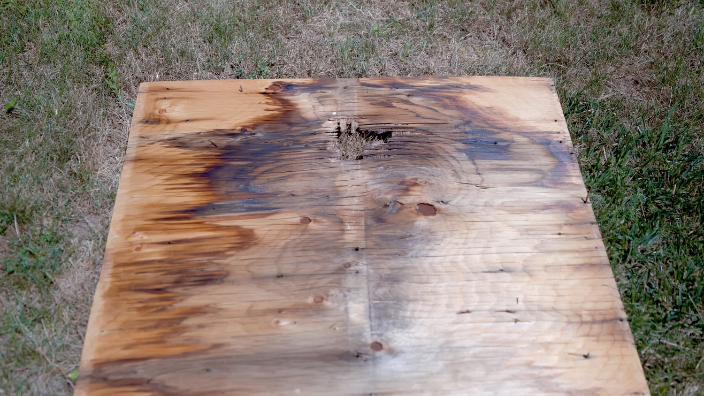
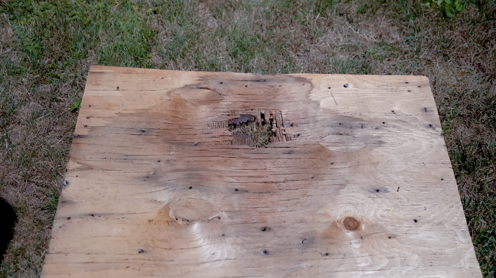
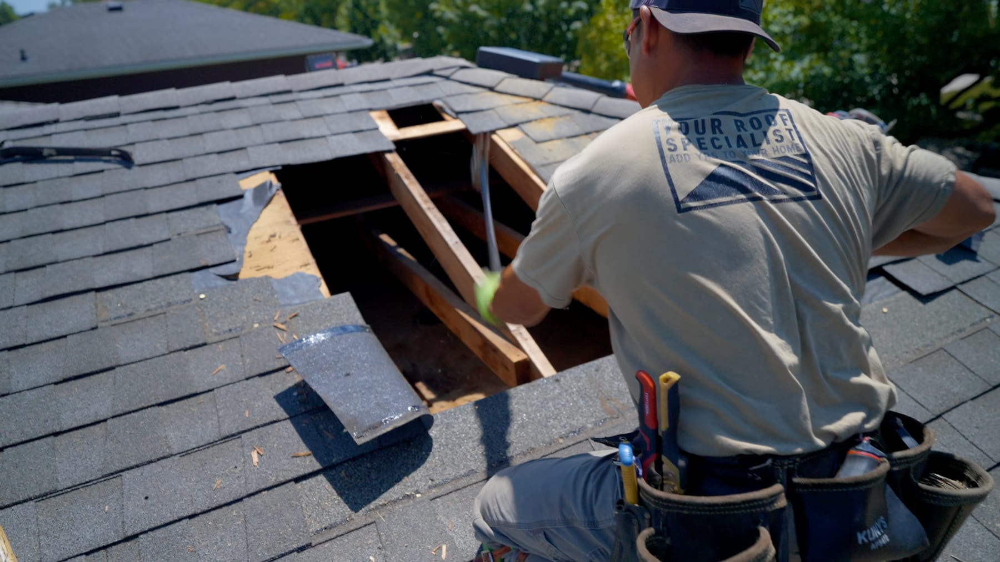
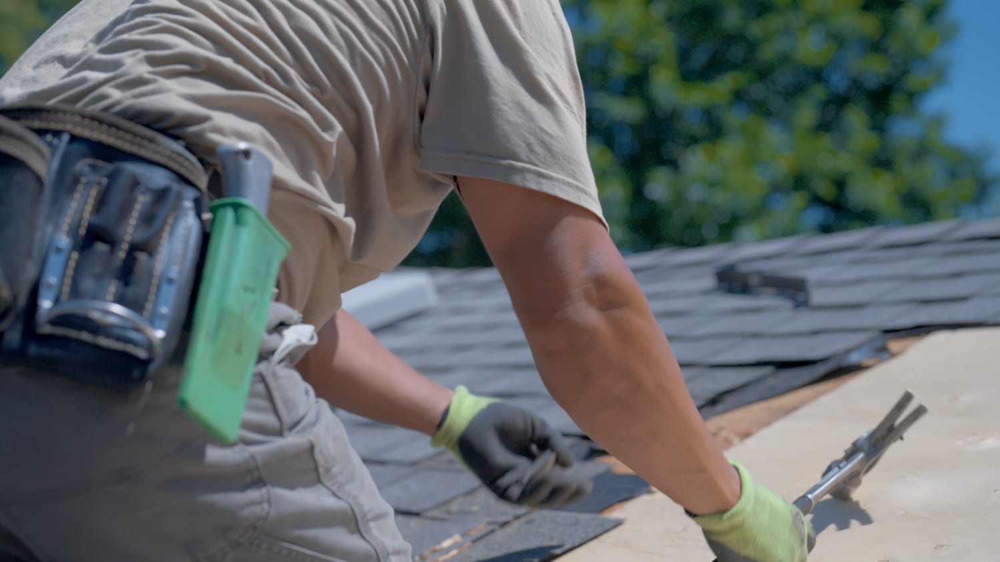
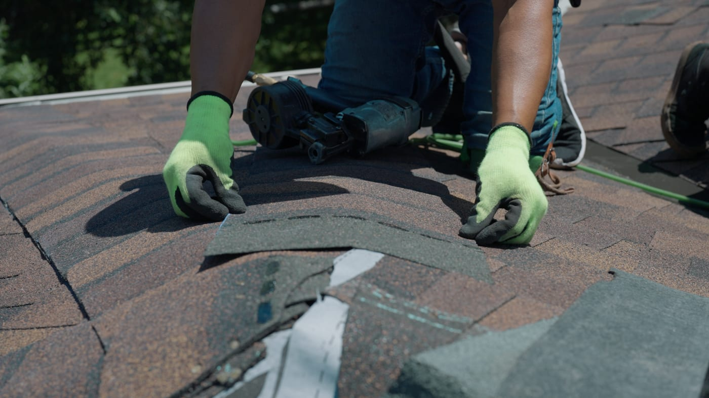
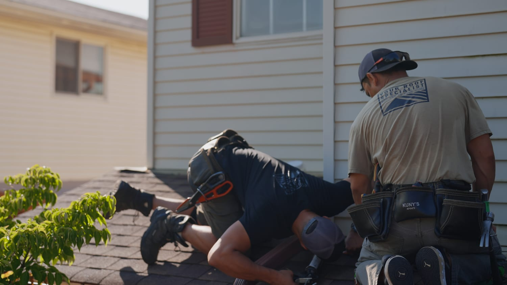

A single exposed fastener is smaller than a pencil. Given a few winters, it can rot a sheet of plywood through and soak the insulation underneath — and you will not see any of it from the ground.
Not just the wet spot — the fastener or flashing that let water in
You see what we found before it gets covered back up
If the damage is contained, we repair it — we don't default to replacement
A roofing nail is supposed to be hidden. You drive it through the shingle in the nail zone, and the next course of shingles covers it. The shingle above is the thing keeping water off the fastener — not the nail itself, and not a bead of sealant.
When a nail ends up exposed, that protection is gone. Water sits on the head and travels down the shank into the plywood by capillary action, the same way liquid climbs into a paper towel. It doesn't need pressure and it doesn't need a big opening.
Then the cycle starts:
That is why this is a years-long problem rather than an event. Nothing dramatic happens on any single day.
This is a sheet of decking we removed from a roof. The dark staining is water tracking outward through the wood from a single fastener penetration near the centre — you can follow it spreading with the grain.

Left long enough, the middle gives out entirely. This is the same failure a stage further on — the plies have delaminated and the sheet is open right through:

Water that gets through the deck doesn't stop there. It runs down the underside of the sheathing and along the rafters until it finds somewhere to soak in — and the first thing below is usually your attic insulation.
Insulation works by trapping still air. Water displaces that air and mats the material down, so while it stays wet, that area gives you a fraction of the thermal performance you're paying for. And in a cold Ontario attic in winter there's often neither the warmth nor the airflow to dry it, so it can stay damp for months at a time.
This is why a roof leak often shows up as something that doesn't look like a roof leak: a room that won't hold heat, a heating bill that has crept up without explanation, or a musty smell. The drip on the ceiling, when it finally arrives, is late in the story.
It's also why the wet area is almost always bigger than the stain. Water travels before it soaks through, so the mark on your ceiling is rarely under the hole that caused it.
Once sheathing has gone soft, sealing the top of the hole achieves nothing. The wood no longer holds a fastener, which means there's nothing solid to attach a new roof to. It has to be cut back to sound material and replaced.

The honest version of this: the cost difference between catching it early and catching it late is large, and it's mostly labour. Sealing a fastener correctly is a small job. Cutting out sheathing, replacing it, rebuilding the underlayment and flashing, and re-shingling the section is not.
Roofs don't usually grow exposed nails on their own. The ones we find are nearly always left over from something done previously:

The wet spot and the leak are usually in different places, so the first job is tracing water back to where it actually entered. We look for the fastener, the flashing joint or the penetration that let it in — not just the stain.

After exposed fasteners, the most common entry point we find is where the roof meets a wall. These junctions need proper step flashing woven into the courses and tucked behind the siding. What we often find instead is a bead of caulk across the joint — which works for a couple of seasons and then cracks.

Because it never gets a chance to dry. A roofing nail is designed to be covered by the next course of shingles. When a fastener is left exposed — face-nailed during a past repair, or left behind when something was removed from the roof — water sits on the head and wicks down the shank into the plywood. Every rain re-wets it. The wood swells and shrinks with each cycle, which loosens the nail and widens the path. In winter, water trapped in that hole freezes and expands, splitting the wood fibre. It is a very small opening doing damage continuously for years.
Not necessarily, but it does mean water has been getting in long enough to travel. Water rarely drips straight down from the hole that let it in — it runs along the underside of the deck and down the rafters before it finds a spot to soak through. That is why the stain on your ceiling is often nowhere near the actual leak, and why the wet area above it is usually bigger than the mark below. A stain is worth an inspection, not a panic.
On a fastener that has not yet done damage, sealing it correctly can be the right call — but caulk alone is a short-term answer, because it sits on the surface, moves at a different rate than the shingle and the metal, and eventually cracks. If the decking under it has already gone soft, sealing the top does nothing about the wood underneath. We check what is under the hole before deciding, rather than sealing it and hoping.
Often not. If the damage is contained we cut back to sound wood, replace the affected sheathing, and rebuild that section properly — underlayment, flashing and shingles. A full replacement becomes the sensible answer when the shingles are near end of life anyway, or when we find rot in several separate areas, because at that point you are paying for repeated access to a roof that is finished. We tell you which one you are actually looking at, with photos.
Almost always from something someone did earlier. The common sources we find are shingles face-nailed during a previous repair, holes left after a satellite dish or an old vent was removed, nails driven too high so the next course never covered them, over-driven nails that cut through the shingle mat, reused flashing re-nailed through its face, and exposed-fastener ridge caps. None of those are visible from the ground, which is why they go unnoticed for years.
Wet insulation stops insulating. Batt and blown insulation work by trapping still air, and water displaces that air and mats the material down, so the affected area loses much of its thermal value while it stays wet. In a cold attic in winter there is often not enough warmth or airflow to dry it out, so it can stay damp for months. That is why a roof leak frequently shows up first as a cold room or a heating bill that does not make sense, rather than as a visible drip.
The five most common sources of a leak, and the early warning signs worth acting on.
ServiceTargeted repairs for missing, cracked or storm-damaged shingles.
ServiceWhat a full tear-off includes, and why we won't roof over existing shingles.
A free inspection tells you whether you're looking at a fastener or a sheet of plywood. Serving Kitchener, Waterloo, Cambridge, Elmira, Guelph, and surrounding areas.